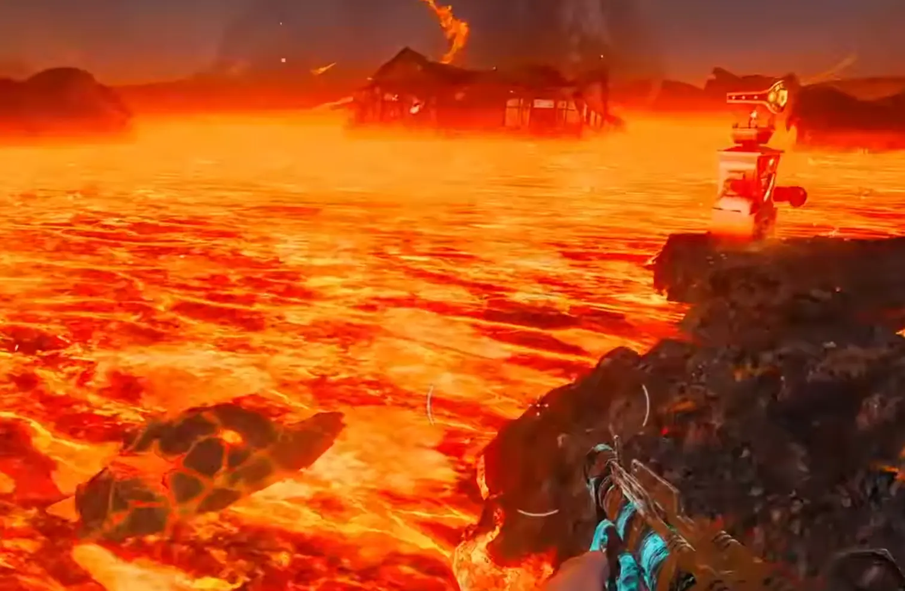
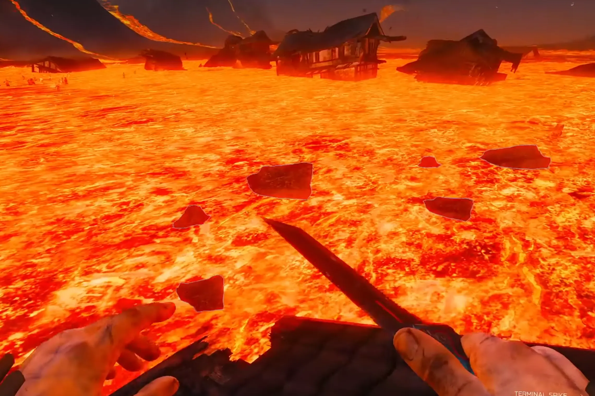
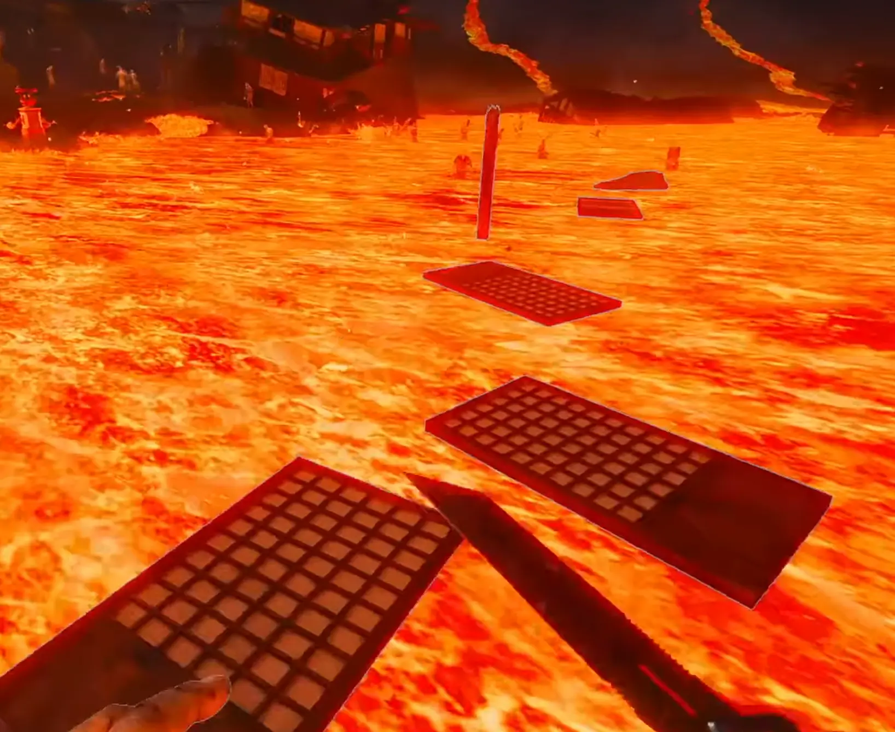
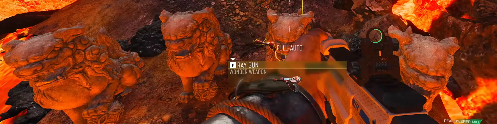
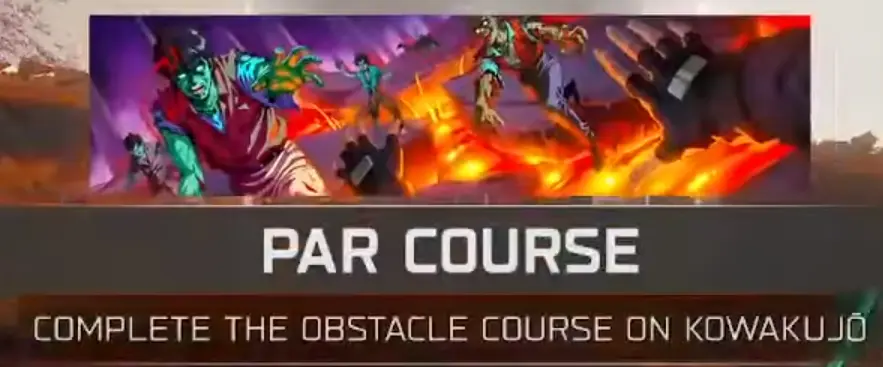

Ten proces wymaga cierpliwości i odrobiny zręczności.
Zanim zaczniesz szukać skarbów, musisz ukończyć standardowy proces odblokowania maszyny Pack-a-Punch. Gra poprowadzi Cię za rękę przez ten etap. Bez tego zapomnij o dalszej zabawie.
Udaj się w okolice lawy obok miejsca, gdzie znajduje się automat z Perk-a-Cola Melee Macchiato. Stań przy samej krawędzi i czekaj. Musisz liczyć na szczęście, aż w lawie pojawi się unosząca się skała. Może to chwilę potrwać, więc miej oczy dookoła głowy!

Gdy skała podpłynie blisko, wskocz na nią. To magiczny moment – większość zombie przestanie Cię atakować i po prostu wejdzie za Tobą do lawy. Uważaj jednak, bo niektóre zgniłki mogą nadal rzucać w Ciebie mięchem. Płyń na skale, aż dotrzesz do zniszczonego domu. Tam wskocz na dach.

Gdy tylko dotkniesz dachu, aktywuje się tor przeszkód. Pojawi się licznik czasu (masz około 42 sekundy na start).

Ostatni skok jest najtrudniejszy! Musisz wziąć solidny rozbieg, żeby dolecieć do celu. Jeśli spadniesz, wrócisz do ostatniego checkpointu, ale jeśli czas się skończy – musisz czekać na nową skałę w lawie w kolejnych rundach.

Po ukończeniu toru wrócisz na główną mapę, gdzie z ziemi wyłonią się cztery posągi lwów (identyczne jak w World at War). Podejdź do nich i odbierz swój darmowy Ray Gun! Dodatkowo wpadnie Ci Calling Card za ukończenie toru przeszkód.
